LETTERS [1] "A" "B" "C" "D" "E" "F" "G" "H" "I" "J" "K" "L" "M" "N" "O" "P" "Q" "R" "S"
[20] "T" "U" "V" "W" "X" "Y" "Z"There are tons of great resources for learning R. R for Data Science is probably the most popular resource for new useRs to get up to speed with slicing and dicing data in R. The R for Data Science book, however, is taught from the perspective of the Tidyverse. The Tidyverse is an opinionated set of packages and functions that help users perform data manipulations primarily on data.frames. While these packages and functions can be great for experienced users by providing ergonomic and consistent interfaces for data.frame manipulation, it is my personal belief that new users should first learn the base language, especially if their goal is to perform bioinformatics analysis.
Bioinformatics tools rely heavily on subsetting and matrix manipulations. In my experience, users who start learning R using only function from the Tidyverse have a difficult time understanding matrix manipulations and subsetting operations common in bioinformatics workflows. This becomes especially important when using SummarizedExperiments - the backbone of many bioinformatics data structures in R.
For this reason, we’re going to focus on learning R from the ground up using functions that exist primarily in the base language. A great resource for learning base R quickly is Norm Matloff’s fasteR which can be found here.
You may have only ever encountered R from the perspective of the tidyverse. tidyverse functions provide useful abstractions for munging tidy data however, most genomics data is often best represented and operated on as matrices. Keeping your data in matrix format can provide many benefits as far as speed and code clarity, which in turn helps to ensure correctness. You can think of matrices as just fancy 2D versions of vectors. So what are vectors?
Vectors are the main building blocks of most R analyses. Whenever you use the c() function (‘concatenate’), like: x <- c('a', 'b', 'c') you’re creating a vector. Vectors hold R objects and are the building block of more complex structures in R.
NOTE: the following is heavily inspired by Norm Matloff’s excellent fasteR tutorial. Take a look there to get a brief and concise overview base R. You should also check out the first few chapters of Hadley Wickham’s amazing book Advanced R. The first edition contains some more information on base R.
Below, we’ll use the built-in R constant called LETTERS. The LETTERS vector is simply a ‘list’ of all uppercase letters in the Roman alphabet.
LETTERS [1] "A" "B" "C" "D" "E" "F" "G" "H" "I" "J" "K" "L" "M" "N" "O" "P" "Q" "R" "S"
[20] "T" "U" "V" "W" "X" "Y" "Z"We can subset the vector by position. For example, to get the 3rd letter we use the [ operator and the position we want to extract.
LETTERS[3][1] "C"We can also use a range of positions. The notation 3:7 is a shortcut that generates the numbers, 3, 4, 5, 6, 7.
LETTERS[3:7][1] "C" "D" "E" "F" "G"We don’t have to select sequential elements either. We can extract elements by using another vector of positions.
LETTERS[c(7, 5, 14, 14, 1, 18, 15)][1] "G" "E" "N" "N" "A" "R" "O"Vectors become really powerful when we start combining them with logical operations. R supports all of the usual logical and comparison operators you can expect from a programming language, <, >, ==, !=, <=, >=, %in%, & and |.
my_favorite_letters <- c("A", "B", "C")
# See that this produces a logical vector of (TRUE/FALSE) values
# TRUE when LETTERS is one of my_favorite_letters and FALSE otherwise
LETTERS %in% my_favorite_letters [1] TRUE TRUE TRUE FALSE FALSE FALSE FALSE FALSE FALSE FALSE FALSE FALSE
[13] FALSE FALSE FALSE FALSE FALSE FALSE FALSE FALSE FALSE FALSE FALSE FALSE
[25] FALSE FALSE# We can use that same expression to filter the vector
LETTERS[LETTERS %in% my_favorite_letters][1] "A" "B" "C"This same kind of subsetting works on vectors that contain numeric data as well. For example, we can filter the measurements of annual flow of water through the Nile river like so:
Nile is another built-in dataset
# Any values strictly greater than 1200
Nile[Nile > 1200][1] 1210 1230 1370 1210 1250 1260 1220# Any even number - `%%` is the modulus operator
Nile[Nile %% 2 == 0] [1] 1120 1160 1210 1160 1160 1230 1370 1140 1110 994 1020 960 1180 958 1140
[16] 1100 1210 1150 1250 1260 1220 1030 1100 774 840 874 694 940 916 692
[31] 1020 1050 726 456 824 702 1120 1100 832 764 768 864 862 698 744
[46] 796 1040 944 984 822 1010 676 846 812 742 1040 860 874 848 890
[61] 744 838 1050 918 986 1020 906 1170 912 746 718 714 740At this point it’s important to take a step back and appreciate what R is doing. Each of the comparison operators that we used above is vectorized. This means that the comparison is applied to all elements of the vector at one time. If you’re used to a programming language like Python this might seem foreign at first. In Python, you would have to write a list comprehension to filter observations from a list that meet a certain condition. For example, [x for x in Nile if x > 1200]. However in R, most functions and operators are vectorized allowing us to do things like Nile > 1200 and have the comparison applied to all of the elements of the vector automatically.
But these are just one dimensional vectors. In R, we usually deal with data.frames (tibbles for you tidyverse folks) and matrices. Lucky for us, the subsetting operations we learned for vectors work the same way for data.frames and matrices.
Let’s take a look at the built-in ToothGrowth dataset. The data consists of the length of odontoblasts in 60 guinea pigs receiving one of three levels of vitamin C by one of two delivery methods.
head(ToothGrowth) len supp dose
1 4.2 VC 0.5
2 11.5 VC 0.5
3 7.3 VC 0.5
4 5.8 VC 0.5
5 6.4 VC 0.5
6 10.0 VC 0.5The dollar sign $ is used to extract an individual column from the data.frame, which is just a vector.
head(ToothGrowth$len)[1] 4.2 11.5 7.3 5.8 6.4 10.0We can also use the [[ to get the same thing. Double-brackets come in handy when your columns are not valid R names since $ only works when columns are valid names.
head(ToothGrowth[["len"]])[1] 4.2 11.5 7.3 5.8 6.4 10.0When subsetting a data.frame in base R, the general scheme is:
df[the rows you want, the columns you want]So in order to get the 5th row of the first column we could do:
ToothGrowth[5, 1][1] 6.4Again, we can combine this kind of thinking to extract rows and columns matching logical conditions. For example, if we want to get all of the animals administered orange juice (‘OJ’)
ToothGrowth[ToothGrowth$supp == "OJ", ] len supp dose
31 15.2 OJ 0.5
32 21.5 OJ 0.5
33 17.6 OJ 0.5
34 9.7 OJ 0.5
35 14.5 OJ 0.5
36 10.0 OJ 0.5
37 8.2 OJ 0.5
38 9.4 OJ 0.5
39 16.5 OJ 0.5
40 9.7 OJ 0.5
41 19.7 OJ 1.0
42 23.3 OJ 1.0
43 23.6 OJ 1.0
44 26.4 OJ 1.0
45 20.0 OJ 1.0
46 25.2 OJ 1.0
47 25.8 OJ 1.0
48 21.2 OJ 1.0
49 14.5 OJ 1.0
50 27.3 OJ 1.0
51 25.5 OJ 2.0
52 26.4 OJ 2.0
53 22.4 OJ 2.0
54 24.5 OJ 2.0
55 24.8 OJ 2.0
56 30.9 OJ 2.0
57 26.4 OJ 2.0
58 27.3 OJ 2.0
59 29.4 OJ 2.0
60 23.0 OJ 2.0We can also combine logical statements. For example, to get all of the rows for animals administered orange juice and with odontoblast length (‘len’) less than 10.
ToothGrowth[ToothGrowth$supp == "OJ" & ToothGrowth$len < 10, ] len supp dose
34 9.7 OJ 0.5
37 8.2 OJ 0.5
38 9.4 OJ 0.5
40 9.7 OJ 0.5# We can also use the bracket notation to select rows and columns at the same time
# Although this gets a little difficult to read
ToothGrowth[ToothGrowth$supp == "OJ" & ToothGrowth$len < 10, c("len", "supp")] len supp
34 9.7 OJ
37 8.2 OJ
38 9.4 OJ
40 9.7 OJIt gets annoying typing ToothGrowth every time we want to subset the data.frame. Base R has a very useful function called subset() that can help us type less. subset() essentially ‘looks inside’ the data.frame for the given columns and evaluates the expression without having to explicitly tell R where to find the columns. Think of it like dplyr::filter(), if you are familiar with that function.
subset(ToothGrowth, supp == "OJ" & len < 10) len supp dose
34 9.7 OJ 0.5
37 8.2 OJ 0.5
38 9.4 OJ 0.5
40 9.7 OJ 0.5Another data structure to be aware of, which is used frequently, is the List. We’ve actually already encountered Lists above. data.frames are really just Lists where each vector contains the same data type and all List elements are the same length.
We can create a List in R using the list() function. Notice how each list element has a name and can contain a different type of data and number of data elements
l <- list(
element1 = c(1, 10, 12, 3, 6, 12, 13, 2, 5, 6, 3, 7),
element2 = c("a", "b", "c"),
element3 = c(TRUE, TRUE, FALSE, FALSE, FALSE),
element4 = c(0.001, 0.05, 0.86, 1.098, 345.0)
)Lists can be tricky at first. To extract the data from a particular list element you can use the [[ or the $ (as in the case of data.frames above). Like vectors, you can use either the index or the name of the element you wish to extract.
l[[1]] [1] 1 10 12 3 6 12 13 2 5 6 3 7l[["element1"]] [1] 1 10 12 3 6 12 13 2 5 6 3 7l$element1 [1] 1 10 12 3 6 12 13 2 5 6 3 7What is returned if you only use the single bracket [?
l[1]$element1
[1] 1 10 12 3 6 12 13 2 5 6 3 7You get another List, but now with a single element. This behavior might seem unintuitive at first, but it can be very useful for creating new lists.
numeric_l <- l[c(1, 4)]Matrices behave much like data.frames but unlike data.frames matrices can only contain one type of data. This might sound like a limitation at first but you’ll soon come to realize that matrices are very powerful (and fast) to work with in R.
set.seed(123)
# Create some random data that looks like methylation values
(m <- matrix(
data = runif(6 * 10),
ncol = 6,
dimnames = list(
paste0("CpG.", 1:10),
paste0("Sample", 1:6)
)
)) Sample1 Sample2 Sample3 Sample4 Sample5 Sample6
CpG.1 0.2875775 0.95683335 0.8895393 0.96302423 0.1428000 0.04583117
CpG.2 0.7883051 0.45333416 0.6928034 0.90229905 0.4145463 0.44220007
CpG.3 0.4089769 0.67757064 0.6405068 0.69070528 0.4137243 0.79892485
CpG.4 0.8830174 0.57263340 0.9942698 0.79546742 0.3688455 0.12189926
CpG.5 0.9404673 0.10292468 0.6557058 0.02461368 0.1524447 0.56094798
CpG.6 0.0455565 0.89982497 0.7085305 0.47779597 0.1388061 0.20653139
CpG.7 0.5281055 0.24608773 0.5440660 0.75845954 0.2330341 0.12753165
CpG.8 0.8924190 0.04205953 0.5941420 0.21640794 0.4659625 0.75330786
CpG.9 0.5514350 0.32792072 0.2891597 0.31818101 0.2659726 0.89504536
CpG.10 0.4566147 0.95450365 0.1471136 0.23162579 0.8578277 0.37446278If we want to extract the value for CpG.3 for Sample3
m[3, 3][1] 0.6405068Or all values of CpG.3 for every sample
m[3, ] Sample1 Sample2 Sample3 Sample4 Sample5 Sample6
0.4089769 0.6775706 0.6405068 0.6907053 0.4137243 0.7989248 # Or refer to the row by it's name
m["CpG.3", ] Sample1 Sample2 Sample3 Sample4 Sample5 Sample6
0.4089769 0.6775706 0.6405068 0.6907053 0.4137243 0.7989248 Or all CpGs for Sample3
m[, 3] CpG.1 CpG.2 CpG.3 CpG.4 CpG.5 CpG.6 CpG.7 CpG.8
0.8895393 0.6928034 0.6405068 0.9942698 0.6557058 0.7085305 0.5440660 0.5941420
CpG.9 CpG.10
0.2891597 0.1471136 # Or refer to the column by it's name
m[, "Sample3"] CpG.1 CpG.2 CpG.3 CpG.4 CpG.5 CpG.6 CpG.7 CpG.8
0.8895393 0.6928034 0.6405068 0.9942698 0.6557058 0.7085305 0.5440660 0.5941420
CpG.9 CpG.10
0.2891597 0.1471136 We can also apply a mask to the entire matrix at once. For example, the following will mark any value that is greater than 0.5 with TRUE
m > 0.5 Sample1 Sample2 Sample3 Sample4 Sample5 Sample6
CpG.1 FALSE TRUE TRUE TRUE FALSE FALSE
CpG.2 TRUE FALSE TRUE TRUE FALSE FALSE
CpG.3 FALSE TRUE TRUE TRUE FALSE TRUE
CpG.4 TRUE TRUE TRUE TRUE FALSE FALSE
CpG.5 TRUE FALSE TRUE FALSE FALSE TRUE
CpG.6 FALSE TRUE TRUE FALSE FALSE FALSE
CpG.7 TRUE FALSE TRUE TRUE FALSE FALSE
CpG.8 TRUE FALSE TRUE FALSE FALSE TRUE
CpG.9 TRUE FALSE FALSE FALSE FALSE TRUE
CpG.10 FALSE TRUE FALSE FALSE TRUE FALSEWe can use this kind of masking to filter rows of the matrix using some very helpful base R functions that operate on matrices. For example, to get only those CpGs where 3 or more samples have a value > 0.5 we can use the rowSums() like so:
m[rowSums(m > 0.5) > 3, ] Sample1 Sample2 Sample3 Sample4 Sample5 Sample6
CpG.3 0.4089769 0.6775706 0.6405068 0.6907053 0.4137243 0.7989248
CpG.4 0.8830174 0.5726334 0.9942698 0.7954674 0.3688455 0.1218993This pattern is very common when dealing with sequencing data. Base R functions like rowSums() and colMeans() are specialized to operate over matrices and are the most efficient way to summarize matrix data. The R package matrixStats also contains highly optimized functions for operating on matrices.
Compare the above to the tidy solution given the same matrix.
tidyr::as_tibble(m, rownames = "CpG") |>
tidyr::pivot_longer(!CpG, names_to = "SampleName", values_to = "beta") |>
dplyr::group_by(CpG) |>
dplyr::mutate(n = sum(beta > 0.5)) |>
dplyr::filter(n > 3) |>
tidyr::pivot_wider(id_cols = CpG, names_from = "SampleName", values_from = "beta") |>
tibble::column_to_rownames(var = "CpG") |>
data.matrix() Sample1 Sample2 Sample3 Sample4 Sample5 Sample6
CpG.3 0.4089769 0.6775706 0.6405068 0.6907053 0.4137243 0.7989248
CpG.4 0.8830174 0.5726334 0.9942698 0.7954674 0.3688455 0.1218993There’s probably some kind of tidy solution using across() that I’m missing but this is how most of the tidy code in the wild that I have seen looks
Now that we’ve got a handle on some different R data types, and how to slice and dice them, we can start learning basic data cleaning and exploratory data analysis. We’ll focus on using data.frames since they’re the primary workhorse of data analysis in R. But remember, data.frames are just lists of vectors with some special rules, so many concepts you learn will apply to data.frames but also apply to vectors and lists.
We’ll use the built in penguins_raw dataset to learn some basic data cleaning. This dataset is built into R version 4.5 so you can just load it by running penguins_raw if you have that R version installed. However, to illustrate data import, we’ll read in the data from an external source.
The read.csv() function can read in comma-separated value files that are located either on your local machine or from remote sources if provided a URL.
url <- "https://raw.githubusercontent.com/allisonhorst/palmerpenguins/refs/heads/main/inst/extdata/penguins_raw.csv"
penguins <- read.csv(url)The read.csv() function has many options for reading in data. If you want to learn about all of the options any particular R function has, you can prefix the function name with a ? like, ?read.csv() to bring up the help documentation.
The code above read the data into data.frame that we called penguins. We can take a look at the first few rows of the penguins data.frame using the head() function.
head(penguins) studyName Sample.Number Species Region Island
1 PAL0708 1 Adelie Penguin (Pygoscelis adeliae) Anvers Torgersen
2 PAL0708 2 Adelie Penguin (Pygoscelis adeliae) Anvers Torgersen
3 PAL0708 3 Adelie Penguin (Pygoscelis adeliae) Anvers Torgersen
4 PAL0708 4 Adelie Penguin (Pygoscelis adeliae) Anvers Torgersen
5 PAL0708 5 Adelie Penguin (Pygoscelis adeliae) Anvers Torgersen
6 PAL0708 6 Adelie Penguin (Pygoscelis adeliae) Anvers Torgersen
Stage Individual.ID Clutch.Completion Date.Egg
1 Adult, 1 Egg Stage N1A1 Yes 2007-11-11
2 Adult, 1 Egg Stage N1A2 Yes 2007-11-11
3 Adult, 1 Egg Stage N2A1 Yes 2007-11-16
4 Adult, 1 Egg Stage N2A2 Yes 2007-11-16
5 Adult, 1 Egg Stage N3A1 Yes 2007-11-16
6 Adult, 1 Egg Stage N3A2 Yes 2007-11-16
Culmen.Length..mm. Culmen.Depth..mm. Flipper.Length..mm. Body.Mass..g. Sex
1 39.1 18.7 181 3750 MALE
2 39.5 17.4 186 3800 FEMALE
3 40.3 18.0 195 3250 FEMALE
4 NA NA NA NA <NA>
5 36.7 19.3 193 3450 FEMALE
6 39.3 20.6 190 3650 MALE
Delta.15.N..o.oo. Delta.13.C..o.oo. Comments
1 NA NA Not enough blood for isotopes.
2 8.94956 -24.69454 <NA>
3 8.36821 -25.33302 <NA>
4 NA NA Adult not sampled.
5 8.76651 -25.32426 <NA>
6 8.66496 -25.29805 <NA>If we want to get a general overview of the data, we can use the str() function.
str(penguins)'data.frame': 344 obs. of 17 variables:
$ studyName : chr "PAL0708" "PAL0708" "PAL0708" "PAL0708" ...
$ Sample.Number : int 1 2 3 4 5 6 7 8 9 10 ...
$ Species : chr "Adelie Penguin (Pygoscelis adeliae)" "Adelie Penguin (Pygoscelis adeliae)" "Adelie Penguin (Pygoscelis adeliae)" "Adelie Penguin (Pygoscelis adeliae)" ...
$ Region : chr "Anvers" "Anvers" "Anvers" "Anvers" ...
$ Island : chr "Torgersen" "Torgersen" "Torgersen" "Torgersen" ...
$ Stage : chr "Adult, 1 Egg Stage" "Adult, 1 Egg Stage" "Adult, 1 Egg Stage" "Adult, 1 Egg Stage" ...
$ Individual.ID : chr "N1A1" "N1A2" "N2A1" "N2A2" ...
$ Clutch.Completion : chr "Yes" "Yes" "Yes" "Yes" ...
$ Date.Egg : chr "2007-11-11" "2007-11-11" "2007-11-16" "2007-11-16" ...
$ Culmen.Length..mm. : num 39.1 39.5 40.3 NA 36.7 39.3 38.9 39.2 34.1 42 ...
$ Culmen.Depth..mm. : num 18.7 17.4 18 NA 19.3 20.6 17.8 19.6 18.1 20.2 ...
$ Flipper.Length..mm.: int 181 186 195 NA 193 190 181 195 193 190 ...
$ Body.Mass..g. : int 3750 3800 3250 NA 3450 3650 3625 4675 3475 4250 ...
$ Sex : chr "MALE" "FEMALE" "FEMALE" NA ...
$ Delta.15.N..o.oo. : num NA 8.95 8.37 NA 8.77 ...
$ Delta.13.C..o.oo. : num NA -24.7 -25.3 NA -25.3 ...
$ Comments : chr "Not enough blood for isotopes." NA NA "Adult not sampled." ...There are a few external packages that are also very useful for getting summaries of data.frames. Hmsic::describe() and skimr::skim() are two standouts.
One of the most basic ways to get an idea of the data is to summarize each variable. There are a few functions we can use to get summaries of the data. The table() function will count the number of occurrences of each type in a vector.
For example, how many observations of each species of penguin are in the dataset?
table(penguins$Species)
Adelie Penguin (Pygoscelis adeliae)
152
Chinstrap penguin (Pygoscelis antarctica)
68
Gentoo penguin (Pygoscelis papua)
124 R also provides the typical summary functions that you would expect from a statistical programming language such as mean(), median(), min(), and max(), and length().
For example, what is the mean flipper length?
mean(penguins$Flipper.Length..mm.)[1] NAOn no! This returned NA but there is clearly data in this column. What happened? Missing data is commonly observed across all data domains. NAs simply represent unknown values in this context and it’s impossible to know how to take the mean of a value that’s known with a value that’s unknown. It is for this reason that many R functions have an argument called na.rm=. Setting na.rm=TRUE in these functions tells R to ignore the NA values.
mean(penguins$Flipper.Length..mm., na.rm = TRUE)[1] 200.9152Now we can see that the mean flipper length is ~200 mm across all observations in the dataset. Another useful function is summary(). Running summary() on a numeric vector returns a lot of useful information.
summary(penguins$Flipper.Length..mm., na.rm = TRUE) Min. 1st Qu. Median Mean 3rd Qu. Max. NA's
172.0 190.0 197.0 200.9 213.0 231.0 2 Finally, if you are using and IDE like Rstudio or Positron you can run the View() function on your data.frame. This will bring up an interactive data viewer.
You may have noticed above that we computed the mean flipper length across all species of penguins. But do all species have the same mean? A common pattern in R is called “split-apply-combine”. This pattern means, split the data into groups you’re interested in, apply a function to each of those groups, and combine the results. One such function that performs this operation is called tapply(). tapply() will split the data by a given variable into groups and apply a function to each group.
For example, to find the mean flipper length for each species we could use
tapply(penguins$Flipper.Length..mm., penguins$Species, mean, na.rm = TRUE) Adelie Penguin (Pygoscelis adeliae)
189.9536
Chinstrap penguin (Pygoscelis antarctica)
195.8235
Gentoo penguin (Pygoscelis papua)
217.1870 The basic format of the tapply() function is
tapply("data to split", "what to split by", "what to compute")Splitting can also by applied directly to data.frames using the split() function. Let’s say we wanted to split the penguins data.frame into one data.frame for each species. We can use the split() function for this purpose.
by_species <- split(penguins, f = penguins$Species)This function returns a list of data.frames, one for each species in the original data.frame. Use names(by_species) to see what each list element is named. To extract the first data.frame from this list, which contains Adelie penguin data only, we can subset the list of data.frames.
adelie <- by_species[[1]]Performing operations on lists is such a common task in R that a function exists specifically to apply functions to list elements. This function is called lapply(). lapply() takes a list and a function and applies that function to each list element. The lapply() function returns the results as a list. We’ll learn more about this later in the functional programming section.
For example, to see how many rows are in each of the data.frames in the “by_species” list:
lapply(by_species, nrow)$`Adelie Penguin (Pygoscelis adeliae)`
[1] 152
$`Chinstrap penguin (Pygoscelis antarctica)`
[1] 68
$`Gentoo penguin (Pygoscelis papua)`
[1] 124Data cleaning and data visualization go hand-in-hand. To effectively clean data, you should be examining the changes you’re making in real time. Base R actually has very powerful graphics capabilities for quickly visualizing data. Packages like ggplot2 and lattice provide powerful alternatives to base R plots. We’ll cover ggplot2 later. For now, base R plotting can provide all we need for exploratory analyses.
One of the most useful plots for numeric data is a histogram. Histograms bin the data and plot how many occurrences of a particular bin are present. This plot allows you to get an idea of the numeric summary of a variable. To plot a histogram of a numeric variable we can use the hist() function.
hist(penguins$Flipper.Length..mm.)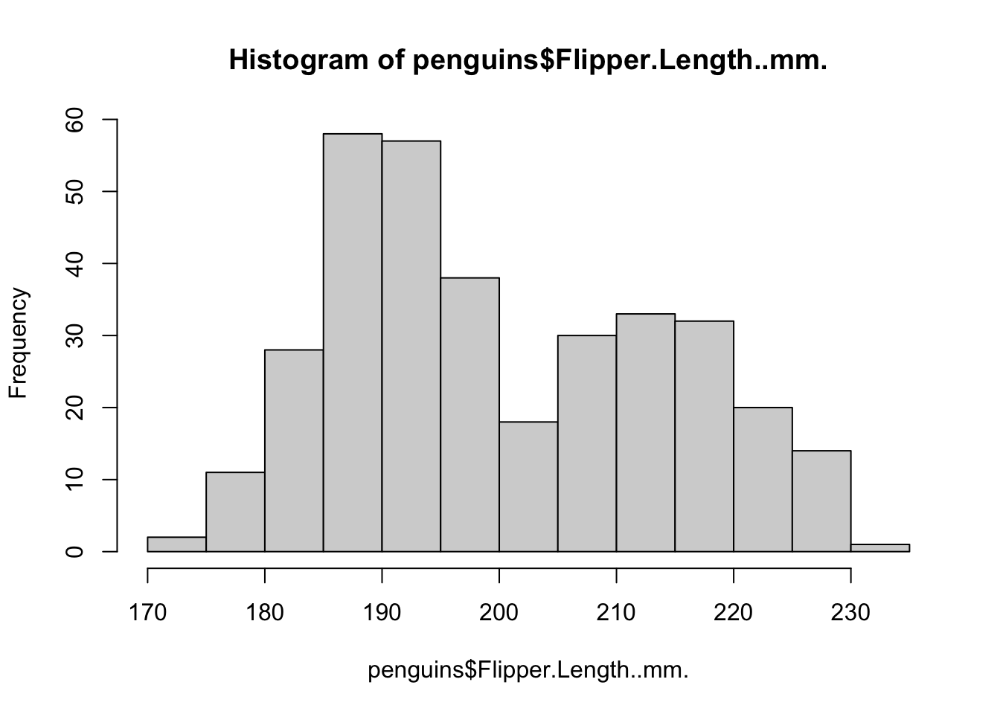
The histogram has a few arguments we can use to adjust the plot. Use ?hist() to see the full list. Below, we can adjust the axes to be more informative and modify the number of bins we’re computing.
hist(penguins$Flipper.Length..mm.,
breaks = 30,
main = "Flipper Length of All Palmer Penguins",
xlab = "Flipper Length (mm)",
ylab = "Count"
)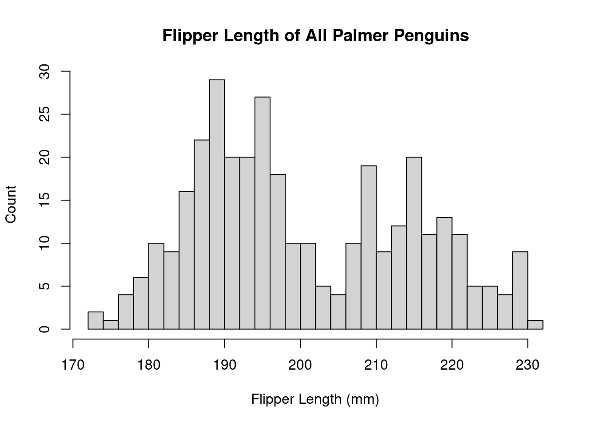
The distribution appears to be bimodal. Is this because there are different species present in this plot? We can check by applying the hist() function to each of the groups using the list of data.frames from above.
# Adelie penguins
hist(by_species[[1]]$Flipper.Length..mm.,
breaks = 20,
main = "Adelie",
xlab = "Flipper Length (mm)")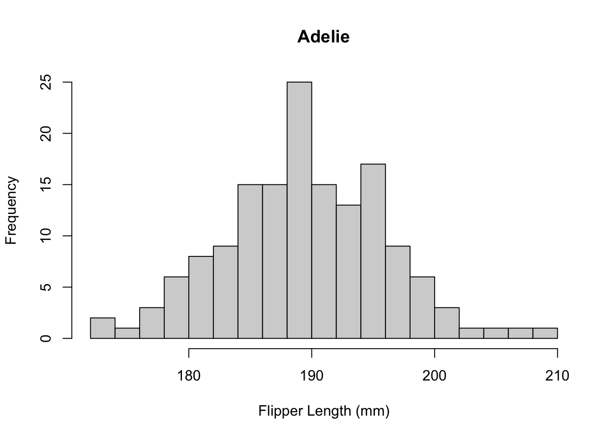
# Chinstrap penguins
hist(by_species[[2]]$Flipper.Length..mm.,
breaks = 20,
main = "Chinstrap",
xlab = "Flipper Length (mm)")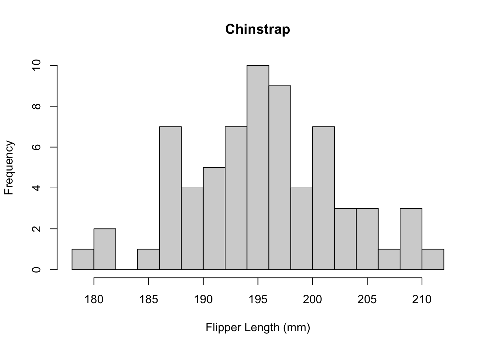
# Gentoo penguins
hist(by_species[[3]]$Flipper.Length..mm.,
breaks = 20,
main = "Gentoo",
xlab = "Flipper Length (mm)")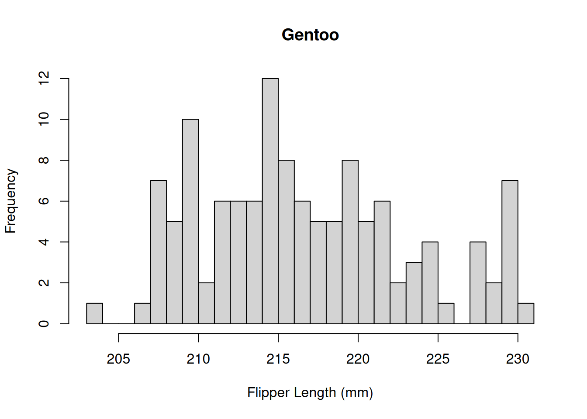
Histograms are useful for plotting the distribution of a single numeric variable. Often, we wish to see how two variables are related. The plot() function provides a way to create a scatter plot of two variables against each other on the same plot. For example, to plot the culmen length vs the culmen depth:
plot(x = penguins$Culmen.Length..mm.,
y = penguins$Culmen.Depth..mm.,
xlab = "Culmen Length (mm)",
ylab = "Culmen Depth (mm)",
main = "Relationship between culmen length and depth"
)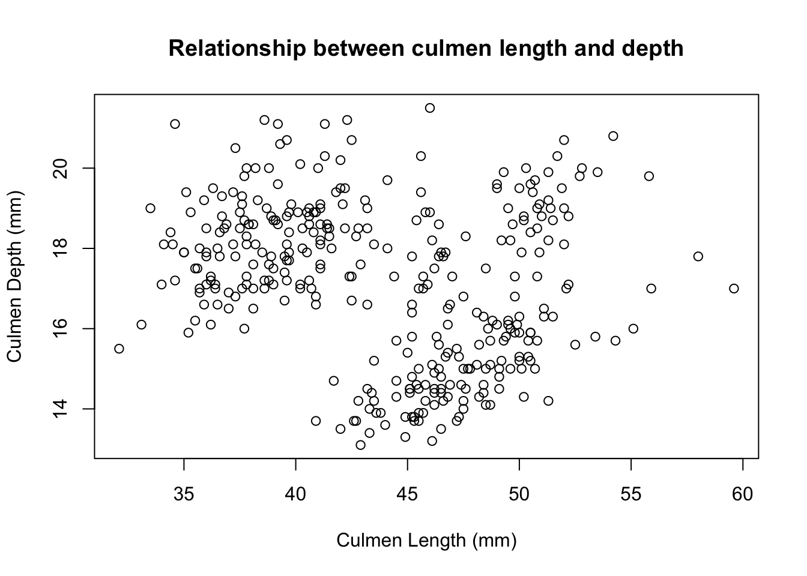
Again, these data points seem to be split by the different species of penguins present in the dataset. We can color these points using an additional variable in the call to the plot() function.
plot(x = penguins$Culmen.Length..mm.,
y = penguins$Culmen.Depth..mm.,
col = factor(penguins$Species),
xlab = "Culmen Length (mm)",
ylab = "Culmen Depth (mm)",
main = "Relationship between culmen length and depth"
)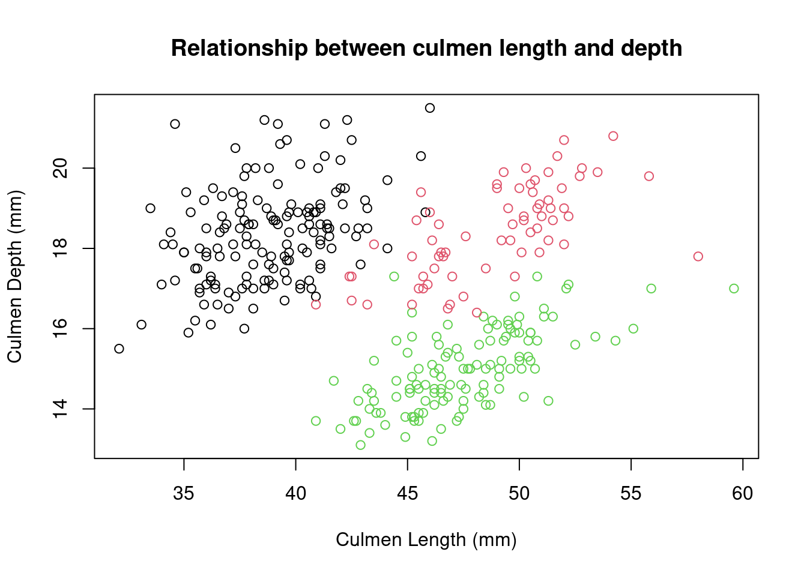
You may have noticed that we did something special to that vector of species. We wrapped it in the factor() function. In R, factors are used when we have categorical values. R uses factors to represent the different levels of each category. It may not seem important now, but factors are very useful for statistical analysis. We’ll build on this topic shortly.
The plot() function is very versatile. You can use it to create line plots as well, to show trends of variables over time. Here is a contrived example of using plot() to create a simple line chart.
plot(
x = adelie$Sample.Number,
y = adelie$Body.Mass..g.,
type = "l",
main = "Body mass vs sample number in Adelie penguins",
xlab = "Sample Number",
ylab = "Body Mass (g)"
)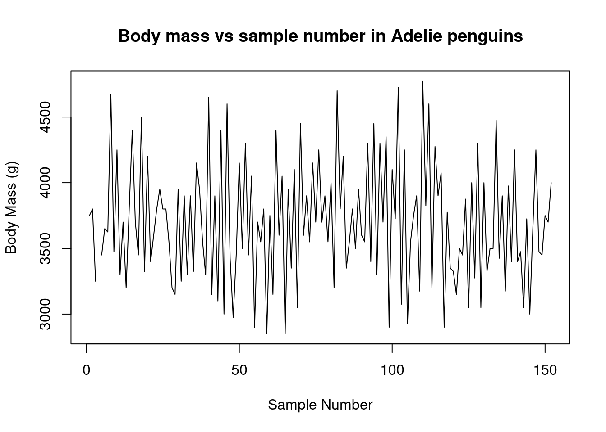
Scatter plots are useful for displaying two numeric values against each other. However you’ll often want to compare numeric values across categorical values. One such plot for doing this is called a boxplot. Boxplots show the median and interquartile (IQR) range for a set of data. The ‘whiskers’ of the boxplot display the 1.5 x IQR of the data. We can plot a boxplot of the flipper length for each species using the boxplot() function.
boxplot(
Flipper.Length..mm. ~ Species,
data = penguins,
main = "Flipper length by species"
)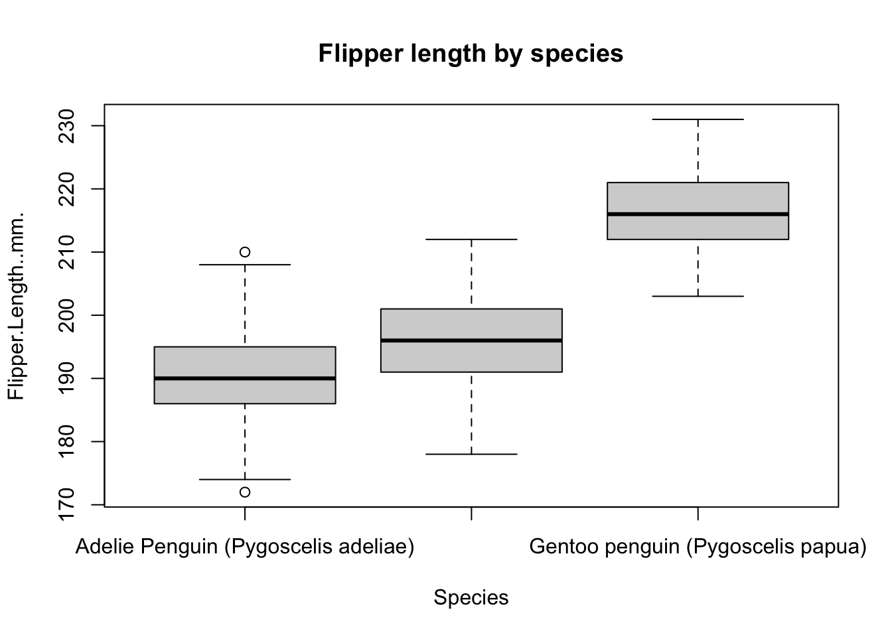
The boxplot() function is a little funny because it uses formula notation. Many functions in R accept formula notation as input. In this case, the formula notation means “plot the flipper length as a function of the species type”. You may have also noticed that we gave this function the penguins data.frame as the value for the data= argument. This allowed the boxplot function to use the column names without us having to explicitly say that they came from the penguins data.frame.
If there’s not too much data, boxplots can actually hide a lot of information. In this case, another option is to use a stripchart. A stripchart shows every data point on the plot instead of a depiction of the distribution as in the boxplot.
stripchart(
Flipper.Length..mm. ~ Species,
data = penguins,
method = "jitter",
pch = 1,
main = "Flipper length by species",
vertical = TRUE
)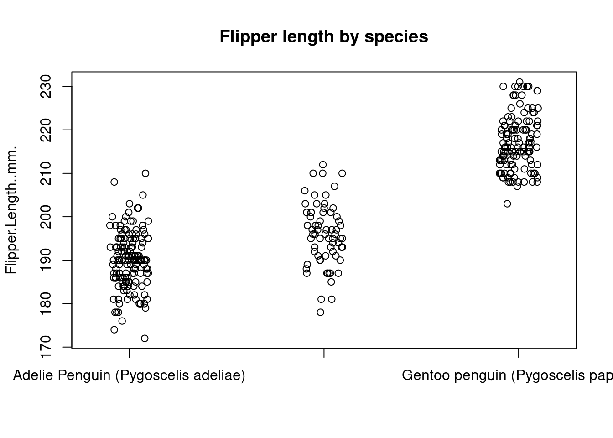
Bar charts are another common way that people show summaries of data. To display a barplot of data, we can use the barplot() function. To create a barplot of the mean flipper length for each species we first need to summarize the flipper length for each group and then supply these summaries to the barplot() function.
species_means <- tapply(penguins$Flipper.Length..mm., penguins$Species, mean, na.rm = TRUE)
barplot(species_means, main = "Mean flipper length by species")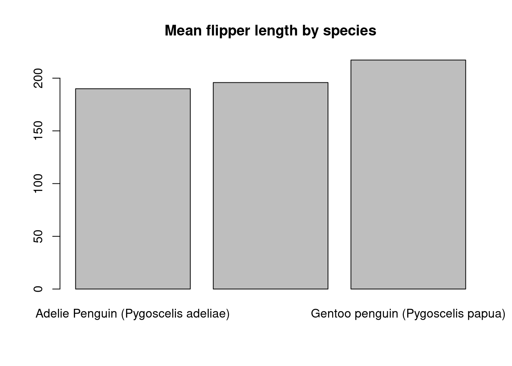
There are many ways to modify these default plot types and make the charts look great. Take the time to look into some of base R graphing capabilities. A really good tutorial for learning about base R plotting can be found here. Also take a look at ?pairs(), ?dotchart(), and ?coplot() for some other useful base R graphics functions for creating quick plots.
We’ve already learned how to subset a data.frame but let’s just take a step back and quickly revisit subsetting data.frames. To subset a data.frame means to select rows of a data.frame based on some condition that you’re interested in. This subsetting can be accomplished using the [ operator and setting conditions by specifying df[the rows we want, the cols we want] syntax.
For example, in the above plots it looked like the Gentoo penguins typically had the largest flippers. It looked like a value > 205 roughly separated the Gentoo penguins from the others. How could we select the rows where the flipper length is greater than or equal to 205 and count the species types?
big_flippers <- penguins[penguins$Flipper.Length..mm. >= 205, ]
table(big_flippers$Species)
Adelie Penguin (Pygoscelis adeliae)
3
Chinstrap penguin (Pygoscelis antarctica)
8
Gentoo penguin (Pygoscelis papua)
122 We can combine conditions as well to select on multiple conditions. For example, let’s select the female penguins with flippers >= 205 mm.
head(penguins[penguins$Sex == "FEMALE" & penguins$Flipper.Length..mm. >= 205, ]) studyName Sample.Number Species Region Island
NA <NA> NA <NA> <NA> <NA>
153 PAL0708 1 Gentoo penguin (Pygoscelis papua) Anvers Biscoe
155 PAL0708 3 Gentoo penguin (Pygoscelis papua) Anvers Biscoe
158 PAL0708 6 Gentoo penguin (Pygoscelis papua) Anvers Biscoe
159 PAL0708 7 Gentoo penguin (Pygoscelis papua) Anvers Biscoe
161 PAL0708 9 Gentoo penguin (Pygoscelis papua) Anvers Biscoe
Stage Individual.ID Clutch.Completion Date.Egg
NA <NA> <NA> <NA> <NA>
153 Adult, 1 Egg Stage N31A1 Yes 2007-11-27
155 Adult, 1 Egg Stage N32A1 Yes 2007-11-27
158 Adult, 1 Egg Stage N33A2 Yes 2007-11-18
159 Adult, 1 Egg Stage N34A1 Yes 2007-11-27
161 Adult, 1 Egg Stage N35A1 Yes 2007-11-27
Culmen.Length..mm. Culmen.Depth..mm. Flipper.Length..mm. Body.Mass..g.
NA NA NA NA NA
153 46.1 13.2 211 4500
155 48.7 14.1 210 4450
158 46.5 13.5 210 4550
159 45.4 14.6 211 4800
161 43.3 13.4 209 4400
Sex Delta.15.N..o.oo. Delta.13.C..o.oo. Comments
NA <NA> NA NA <NA>
153 FEMALE 7.99300 -25.51390 <NA>
155 FEMALE 8.14705 -25.46172 <NA>
158 FEMALE 7.99530 -25.32829 <NA>
159 FEMALE 8.24515 -25.46782 <NA>
161 FEMALE 8.13643 -25.32176 <NA>Another important aspect of base R data.frames is that they can utilize rownames(). Using rownames() is uncommon in workflows from the tidyverse or even data.table. However, rownames() can be very useful when dealing with bioinformatics data. One R package that utilizes rownames() extensively is the SummarizedExperiment. SummarizedExperiments use rownames and colnames to ensure that data stays coordinated during an analysis.
You can view and set the rownames() on a data.frame using the rownames() function.
# View the current rownames
head(rownames(penguins))[1] "1" "2" "3" "4" "5" "6"# Set the rownames based on a new value - we'll go over what paste() does shortly
rownames(penguins) <- paste("row_number", 1:nrow(penguins), sep = ".")
# View the new rownames
head(rownames(penguins))[1] "row_number.1" "row_number.2" "row_number.3" "row_number.4" "row_number.5"
[6] "row_number.6"Above, we filtered by a column in the data.frame. We can also filter by selecting rownames.
penguins[c("row_number.1", "row_number.5"), ] studyName Sample.Number Species Region
row_number.1 PAL0708 1 Adelie Penguin (Pygoscelis adeliae) Anvers
row_number.5 PAL0708 5 Adelie Penguin (Pygoscelis adeliae) Anvers
Island Stage Individual.ID Clutch.Completion
row_number.1 Torgersen Adult, 1 Egg Stage N1A1 Yes
row_number.5 Torgersen Adult, 1 Egg Stage N3A1 Yes
Date.Egg Culmen.Length..mm. Culmen.Depth..mm.
row_number.1 2007-11-11 39.1 18.7
row_number.5 2007-11-16 36.7 19.3
Flipper.Length..mm. Body.Mass..g. Sex Delta.15.N..o.oo.
row_number.1 181 3750 MALE NA
row_number.5 193 3450 FEMALE 8.76651
Delta.13.C..o.oo. Comments
row_number.1 NA Not enough blood for isotopes.
row_number.5 -25.32426 <NA>We can also change the order of the rows in a data.frame. This is similar to subsetting but instead rearranges the data based on some condition. To reorder the data.frame we can use the order() function.
For example, we can order the data by decreasing flipper length
head(penguins[order(penguins$Flipper.Length..mm., decreasing = TRUE), ]) studyName Sample.Number Species Region
row_number.216 PAL0809 64 Gentoo penguin (Pygoscelis papua) Anvers
row_number.154 PAL0708 2 Gentoo penguin (Pygoscelis papua) Anvers
row_number.186 PAL0708 34 Gentoo penguin (Pygoscelis papua) Anvers
row_number.218 PAL0809 66 Gentoo penguin (Pygoscelis papua) Anvers
row_number.228 PAL0809 76 Gentoo penguin (Pygoscelis papua) Anvers
row_number.242 PAL0910 90 Gentoo penguin (Pygoscelis papua) Anvers
Island Stage Individual.ID Clutch.Completion
row_number.216 Biscoe Adult, 1 Egg Stage N19A2 Yes
row_number.154 Biscoe Adult, 1 Egg Stage N31A2 Yes
row_number.186 Biscoe Adult, 1 Egg Stage N56A2 Yes
row_number.218 Biscoe Adult, 1 Egg Stage N20A2 Yes
row_number.228 Biscoe Adult, 1 Egg Stage N56A2 Yes
row_number.242 Biscoe Adult, 1 Egg Stage N14A2 Yes
Date.Egg Culmen.Length..mm. Culmen.Depth..mm.
row_number.216 2008-11-13 54.3 15.7
row_number.154 2007-11-27 50.0 16.3
row_number.186 2007-12-03 59.6 17.0
row_number.218 2008-11-04 49.8 16.8
row_number.228 2008-11-06 48.6 16.0
row_number.242 2009-11-25 52.1 17.0
Flipper.Length..mm. Body.Mass..g. Sex Delta.15.N..o.oo.
row_number.216 231 5650 MALE 8.49662
row_number.154 230 5700 MALE 8.14756
row_number.186 230 6050 MALE 7.76843
row_number.218 230 5700 MALE 8.47067
row_number.228 230 5800 MALE 8.59640
row_number.242 230 5550 MALE 8.27595
Delta.13.C..o.oo. Comments
row_number.216 -26.84166 <NA>
row_number.154 -25.39369 <NA>
row_number.186 -25.68210 <NA>
row_number.218 -26.69166 <NA>
row_number.228 -26.71199 <NA>
row_number.242 -26.11657 <NA>R also provides the sort() function. See if you can understand the difference between order() and sort().
Similar to filtering above, we can also reorder by the rownames().
head(penguins[order(rownames(penguins)), ]) studyName Sample.Number Species
row_number.1 PAL0708 1 Adelie Penguin (Pygoscelis adeliae)
row_number.10 PAL0708 10 Adelie Penguin (Pygoscelis adeliae)
row_number.100 PAL0809 100 Adelie Penguin (Pygoscelis adeliae)
row_number.101 PAL0910 101 Adelie Penguin (Pygoscelis adeliae)
row_number.102 PAL0910 102 Adelie Penguin (Pygoscelis adeliae)
row_number.103 PAL0910 103 Adelie Penguin (Pygoscelis adeliae)
Region Island Stage Individual.ID
row_number.1 Anvers Torgersen Adult, 1 Egg Stage N1A1
row_number.10 Anvers Torgersen Adult, 1 Egg Stage N5A2
row_number.100 Anvers Dream Adult, 1 Egg Stage N50A2
row_number.101 Anvers Biscoe Adult, 1 Egg Stage N47A1
row_number.102 Anvers Biscoe Adult, 1 Egg Stage N47A2
row_number.103 Anvers Biscoe Adult, 1 Egg Stage N49A1
Clutch.Completion Date.Egg Culmen.Length..mm.
row_number.1 Yes 2007-11-11 39.1
row_number.10 Yes 2007-11-09 42.0
row_number.100 Yes 2008-11-10 43.2
row_number.101 Yes 2009-11-09 35.0
row_number.102 Yes 2009-11-09 41.0
row_number.103 Yes 2009-11-15 37.7
Culmen.Depth..mm. Flipper.Length..mm. Body.Mass..g. Sex
row_number.1 18.7 181 3750 MALE
row_number.10 20.2 190 4250 <NA>
row_number.100 18.5 192 4100 MALE
row_number.101 17.9 192 3725 FEMALE
row_number.102 20.0 203 4725 MALE
row_number.103 16.0 183 3075 FEMALE
Delta.15.N..o.oo. Delta.13.C..o.oo.
row_number.1 NA NA
row_number.10 9.13362 -25.09368
row_number.100 8.97025 -26.03679
row_number.101 8.84451 -26.28055
row_number.102 9.01079 -26.38085
row_number.103 9.21510 -26.22530
Comments
row_number.1 Not enough blood for isotopes.
row_number.10 No blood sample obtained for sexing.
row_number.100 <NA>
row_number.101 <NA>
row_number.102 <NA>
row_number.103 <NA>Can you figure out why the data.frame was sorted this way?
Similarly to how we were able to select rows of data from the data.frame, we can also select columns of the data.frame. First, to see what columns are in our data.frame we can use the colnames() function.
colnames(penguins) [1] "studyName" "Sample.Number" "Species"
[4] "Region" "Island" "Stage"
[7] "Individual.ID" "Clutch.Completion" "Date.Egg"
[10] "Culmen.Length..mm." "Culmen.Depth..mm." "Flipper.Length..mm."
[13] "Body.Mass..g." "Sex" "Delta.15.N..o.oo."
[16] "Delta.13.C..o.oo." "Comments" To select columns, we can either specify the columns we want by name
head(penguins[, c("studyName", "Species")]) studyName Species
row_number.1 PAL0708 Adelie Penguin (Pygoscelis adeliae)
row_number.2 PAL0708 Adelie Penguin (Pygoscelis adeliae)
row_number.3 PAL0708 Adelie Penguin (Pygoscelis adeliae)
row_number.4 PAL0708 Adelie Penguin (Pygoscelis adeliae)
row_number.5 PAL0708 Adelie Penguin (Pygoscelis adeliae)
row_number.6 PAL0708 Adelie Penguin (Pygoscelis adeliae)Or by the column index
head(penguins[, c(1, 3)]) studyName Species
row_number.1 PAL0708 Adelie Penguin (Pygoscelis adeliae)
row_number.2 PAL0708 Adelie Penguin (Pygoscelis adeliae)
row_number.3 PAL0708 Adelie Penguin (Pygoscelis adeliae)
row_number.4 PAL0708 Adelie Penguin (Pygoscelis adeliae)
row_number.5 PAL0708 Adelie Penguin (Pygoscelis adeliae)
row_number.6 PAL0708 Adelie Penguin (Pygoscelis adeliae)If we want to rename a column, we can use the colnames() function to reassign the column name with a new name. First, we can get the index of the column we want to change. Then we can reassign that column with the new name.
# This returns the index of the colnames() that matches "Species"
which_col_to_change <- which(colnames(penguins) == "Species")
# Rename "Species" to "species"
colnames(penguins)[which_col_to_change] <- "species"One tricky aspect of base R subsetting on data.frames has to do with selecting a single column of data. If you select a single column of data from a data.frame what you get back is a vector. To ensure that you return a data.frame when selecting a single column, add the drop=FALSE argument when selecting a single column.
# Returns a vector
class(penguins[, "species"])[1] "character"# Returns a data.frame
class(penguins[, "species", drop = FALSE])[1] "data.frame"Adding or removing columns of data to a data.frame is as simple as specifying the name of the column you want to add along with the data that you want to add.
For example, if I wanted to convert the flipper length from mm to m I could multiply each value of flipper length by 0.001.
penguins$flipper_length_m <- penguins$Flipper.Length..mm. * 0.001The above data transformation works because of R’s vectorization rule described above. What if I wanted to define a new variable based on a logical condition? For example, what if I wanted to create a new column based on whether or not a penguin was and Adelie or any other kind? A useful function for performing this action is ifelse(). ifelse() evaluates a logical condition and returns a value based on whether the condition evaluates to TRUE or FALSE.
penguins$is_adelie <- ifelse(
penguins$species == "Adelie Penguin (Pygoscelis adeliae)",
"Adelie",
"Other"
)If I want to remove a column from the data.frame I can set the value of the column to NULL
penguins$Flipper.Length..mm. <- NULLString operations are an important part of data cleaning. Base R supports many functions for transforming strings. Again, these string functions are typically vectorized meaning that they can easily be used to modify columns of data.frames.
The “species” column of the penguins data.frame is annoying to work with. We can simplify this column by creating simpler names for each species by excluding the scientific name and the word ‘penguin’ (we know they’re all penguins…)
One base R function we can use to find and replace text is called gsub(). gsub() takes what is called a regular expression to find text inside of a string and then replaces the text it finds with the text you supply. Regular expressions can become incredibly complex. With this complexity come a lot of power. It would be impossible to teach regular expression in this tutorial. Taking some time to understand the basics of regular expressions can go a long way during data cleaning.
# Replace a space followed by the word 'penguins' and any other character
penguins$species_clean <- gsub(
pattern = " penguin.*",
replacement = "",
x = penguins$species,
ignore.case = TRUE
)
# Show the counts for these new categories
table(penguins$species_clean)
Adelie Chinstrap Gentoo
152 68 124 Another base R function that is useful for extracting text is the substr() function. substr() extracts sub-strings from the supplied text based on the index of the text. For example, to create an even simpler representation of species we could extract only the first letter from the “species” column.
penguins$species_simple <- substr(penguins$species, start = 1, stop = 1)
table(penguins$species_simple)
A C G
152 68 124 A slightly more complicated string operation is extracting text from a string. This involves two functions; one to find a match in the text and another to extract it. Let’s say we wanted to extract the word ‘penguin’ from each of the original species strings. We can do this with a combination of regmatches() and regexpr().
penguins$only_penguin <- regmatches(
x = penguins$species,
m = regexpr(pattern = "penguin",
text = penguins$species,
ignore.case = TRUE)
)R also supports basic operations on strings like making all characters upper or lowercase. For example, to ensure only_penguin contains ‘penguin’ (and not ‘Penguin’) we can convert the string to lowercase
# lower case
head(tolower(penguins$only_penguin))[1] "penguin" "penguin" "penguin" "penguin" "penguin" "penguin"# or upper case
head(toupper(penguins$only_penguin))[1] "PENGUIN" "PENGUIN" "PENGUIN" "PENGUIN" "PENGUIN" "PENGUIN"Another slightly complicated string operation is string splitting. String splitting in base R can be accomplished using the strsplit() function. This function is a little tricky because it returns a list. Here, we split the “species” column on every space character. Using the results from the strsplit() function most efficiently involves some advanced R skills.
split_species <- strsplit(
x = penguins$species,
split = " "
)
# strsplit returns a list of character vectors split on every space
head(split_species)[[1]]
[1] "Adelie" "Penguin" "(Pygoscelis" "adeliae)"
[[2]]
[1] "Adelie" "Penguin" "(Pygoscelis" "adeliae)"
[[3]]
[1] "Adelie" "Penguin" "(Pygoscelis" "adeliae)"
[[4]]
[1] "Adelie" "Penguin" "(Pygoscelis" "adeliae)"
[[5]]
[1] "Adelie" "Penguin" "(Pygoscelis" "adeliae)"
[[6]]
[1] "Adelie" "Penguin" "(Pygoscelis" "adeliae)" # To extract the species from this list, we can use a fancy trick
# don't worry about what's happening here right now
penguins$extracted_species <- sapply(split_species, `[[`, 1)R contains all of the typical control flow you expect from a programming language.
For-loops are somewhat under-utilized by many R users but can often be the most clear for new (and experienced) users. one common for-loop idion in R is to use a for-loop with the seq_along() function. seq_along() generates an index of the given vector that you can use to loop over.
for (i in seq_along(x)) {
doSomething(x[i])
}Other looping operations in base R include while and repeat.
Conditional statements can be tested using if statements. These follow a familiar syntax
x <- 10
if (x == 10) {
print("the value of x is 10")
} else {
print("the value of x is something else")
}[1] "the value of x is 10"If statements in R are not vectorized. Use ifelse() to perform a vectorized if statement as demonstrated above.
If statements are often combined with for-loops.
# Make some space to save the result
result <- vector("character", length = 10)
# Determine if the number is even or odd
for (i in 1:10) {
if (i %% 2 == 0) {
result[i] <- "even"
} else {
result[i] <- "odd"
}
}
result [1] "odd" "even" "odd" "even" "odd" "even" "odd" "even" "odd" "even"R also contains a switch() statement which can be very useful when programming new functions.
Eventually you’ll want to create your own functions to do stuff. Functions can be defined in R using the following syntax
f <- function(args) {
expr
}To make this a little more concrete, let’s define a function that classifies a penguin based on it’s flipper size. Our function will take in a flipper size and a threshold value for determining whether or not the penguin is “large” or “small” based on this flipper size. The function will return the resulting size designation.
determine_size <- function(flipper_size, threshold = 0.2) {
if (flipper_size >= threshold) {
size_category <- "large"
} else {
size_category <- "small"
}
return(size_category)
}
# Is a 0.5 meter flipper length large or small?
determine_size(flipper_size = 0.5)[1] "large"For-loops in R are very simple to understand but most R programmers use functions in the apply() family. These functions supply abstractions over common for-loops that make applying functions over lists much easier in R.
The most commonly used functional programming paradigm in R is the use of the lapply() function. The lapply() function takes a list as input, applies a function to each element of that list, and returns the results as a list. For example, above we split the penguins data.frame into a list of smaller data.frames for each species. Instead of repeating the code to create a histogram from each data.frame, let’s define a function that plots a histogram using a data.frame and then apply that function to every data.frame in our “by_species” list of data.frames
# Define a function for plotting a histogram of flipper lengths
plot_histogram <- function(df) {
hist(df[, "Flipper.Length..mm."], breaks=20)
}
# Apply this function to every data.frame
# invisible() is used to hide the output from the hist() function
invisible(
lapply(X = by_species, FUN = plot_histogram)
)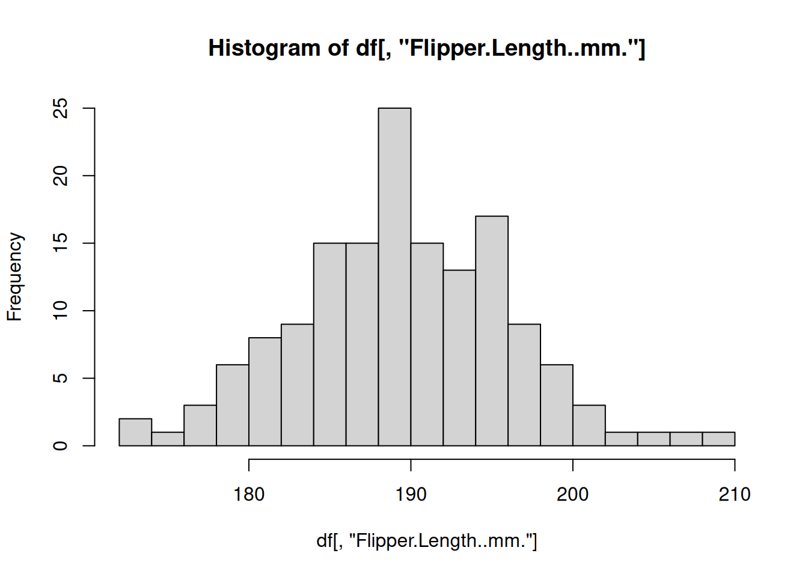
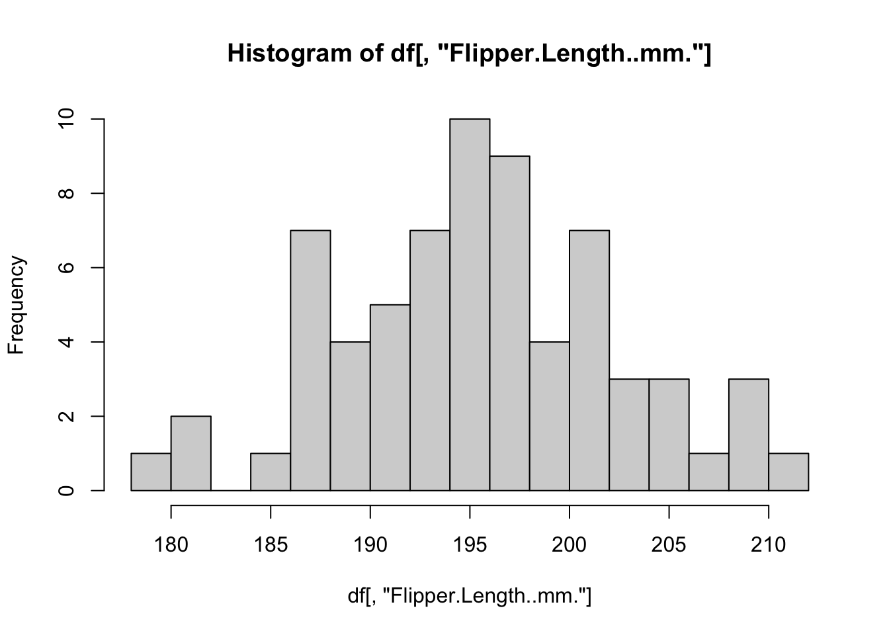
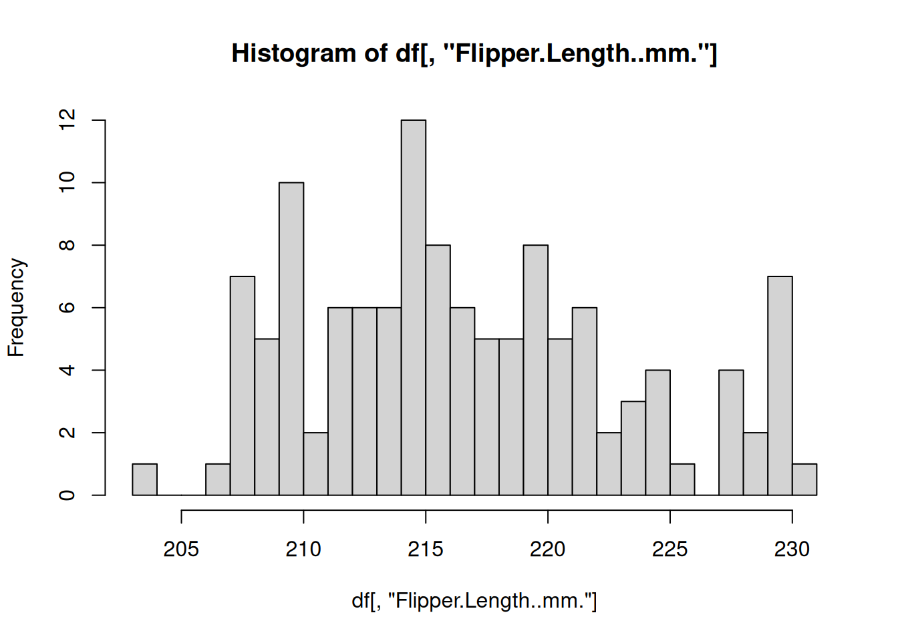
R includes some other specialized functions for functional programming. Be sure to explore apply() for computing over rows/columns of matrices, sapply()and vapply() for applying functions over lists and returning vectors, mapply() for supplying multiple arguments to a list.
This only scratches the surface of programming in R. Check out these resources for more information.